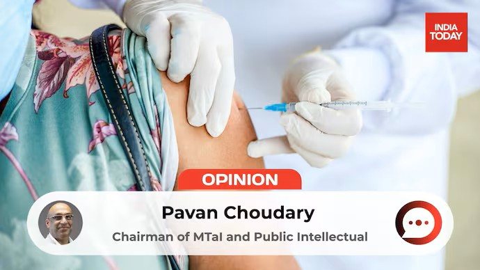

Vaccine hesitancy – India hesitancy: Two sides of the same dangerous coin
July 13, 2023

First Published in India Today on on 6th July 2025
Vaccine hesitancy has a long history. Initially, vaccines were opposed on religious grounds, viewed as interference with divine will. Later, in liberal societies, they were resisted as infringements on personal freedom, especially when made mandatory.
In modern times, the anti-vaccine movement gained steam from 1998 through a widely publicised study by Dr. Andrew Wakefield that falsely linked the MMR (Measles, Mumps and Rubella) vaccine to autism. Wakefield overlooked the crucial fact that autism often manifests around the same age at which the MMR vaccine is administered. Driven by the distress and assumptions of some parents who misread the timing of autism’s onset as being triggered by the vaccine, Wakefield arrived at a deeply flawed conclusion. The study was later debunked and retracted, and Wakefield was discredited; however, the damage was lasting, fuelling vaccine suspicion, lowering immunisation rates, and contributing to outbreaks of preventable diseases, such as measles.
In recent decades, vaccine resistance was further inflamed by conspiracy theories that framed vaccines as mere tools of profiteering corporations.
During COVID, these historical strands of vaccine hesitancy – religious conservatism, libertarianism, and conspiracism – merged into a potent blend of distrust, politicisation, and misinformation, stoking a global wave of vaccine resistance that led to preventable illness and death across nations.
Today, a similar blend of scientific distortion and political opportunism is evident in Karnataka’s Chief Minister Siddaramaiah’s recent tweets. Without offering any credible evidence, he hinted at a connection between the COVID-19 vaccines and a rise in heart attacks. His language – posing questions rather than making claims outright – mirrors a now-familiar strategy: sow doubt while evading responsibility. Like Wakefield, Siddaramaiah appears driven not by science, but by a confluence of ideology, misperception, and political calculation.
What is both striking and encouraging is that, this time, several prominent Indian industrialists have pushed back decisively against such misinformation. In a landscape where business leaders often tread cautiously amid political currents, their clarity is commendable. Foremost among them is Biocon’s Kiran Mazumdar-Shaw, a rare business voice known for calling a spade a spade. She has long advocated for constructive criticism in India’s industry-government interface, even echoing Rahul Bajaj’s concerns that government criticism is often mislabelled as “anti-national.” Despite her history of critiquing the regulatory process on occasions, she came out strongly in defense of India’s vaccine oversight. Countering Siddaramaiah’s charge of hasty approval and distribution, she tweeted:
“COVID-19 vaccines developed in India were approved under the Emergency Use Authorisation framework, following rigorous protocols aligned with global standards for safety and efficacy. To suggest that these vaccines were ‘hastily’ approved is factually incorrect and contributes to public misinformation.”
Kiran Mazumdar-Shaw articulated her response with precision, crafting it to be nearly unassailable and preempting any credible counterattack. So did Pankaj Bhai Patel, Dilip Shanghvi, Satish Reddy, and Sudarshan Jain. AIIMS and other leading institutions also convincingly defended the safety and efficacy of the vaccines, citing large-scale clinical trials and real-world data collected over millions of doses. The broader scientific community has reinforced this by pointing out that India’s vaccines have not only protected its own people but were also supplied to over 70 countries, helping bridge global vaccine inequity.
However, what makes this moment more troubling is that Siddaramaiah’s anti-science insinuations are not isolated. Internationally, figures like Robert F. Kennedy Jr., US Secretary of Health and Human Sevices, continue to push vaccine skepticism – not as scientists, but as political actors. RFK Jr.’s crusade is rooted in libertarian distrust of federal institutions and often veers into conspiracy theory. More insidiously, Siddaramaiah’s comments appear not only to undermine vaccines, but to subtly discredit the Indian scientific establishment, turning a global public health issue into a domestic political weapon. His sludge is thus not just anti-science – it edges toward being anti-India.
Since the establishment and Modi are near-synonymous today, attacking Indian institutions often doubles as an attack on Modi. Modi’s opponents in India ask: why cut Modi slack when he’s been ruthlessly below the belt with us? India is navigating a complex and competitive world where credibility, not partisanship, determines influence. Defending our institutions in this moment is not about giving anyone political cover – it’s about protecting India’s long-term standing and scientific integrity.
India supplies 60% of the world’s vaccines and has done so reliably, safely, and at scale. At a time when the country is positioning itself as a trusted health partner to the world, amid shifting geopolitical and geo-commercial landscapes, ill-considered, uninformed criticism from within can do more damage than we realise. This is not the time to erode trust in one of India’s most respected global contributions. It is time to defend it.
Science must always be open to scrutiny, and governments must be held accountable. But there is a difference between honest inquiry and opportunistic delegitimisation. The former strengthens democracy and public health; the latter corrodes both. At a time when India is under external pressure and internal strain, spreading unsubstantiated fears erodes public trust and weakens our shared resilience.
In an age where trust is as critical as innovation, we must not only defend our science – we must stand behind those who uphold it, at home and on the world stage.
(Pavan Choudary is the Chairman of the Medical Technology Association of India (MTaI) and a Public Intellectual)